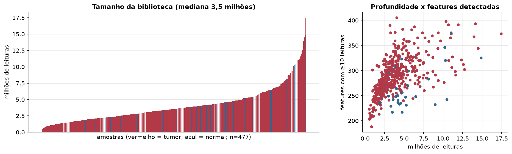
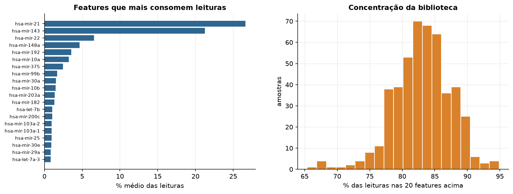
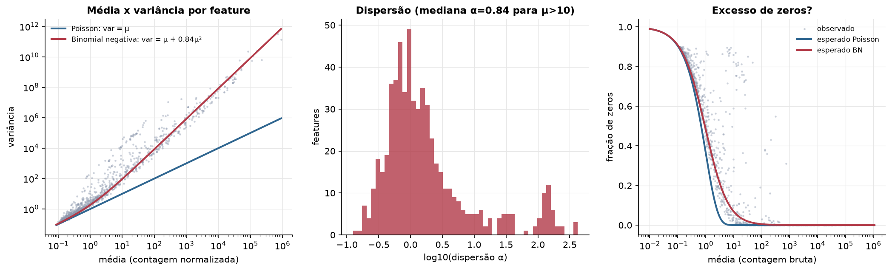
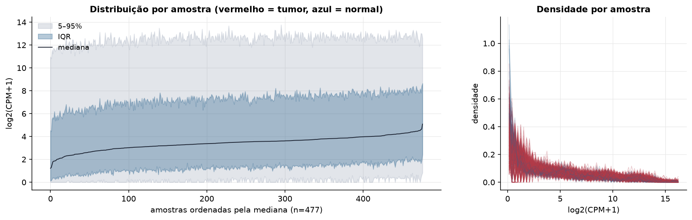
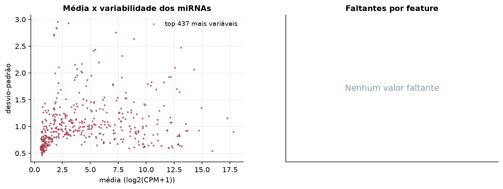
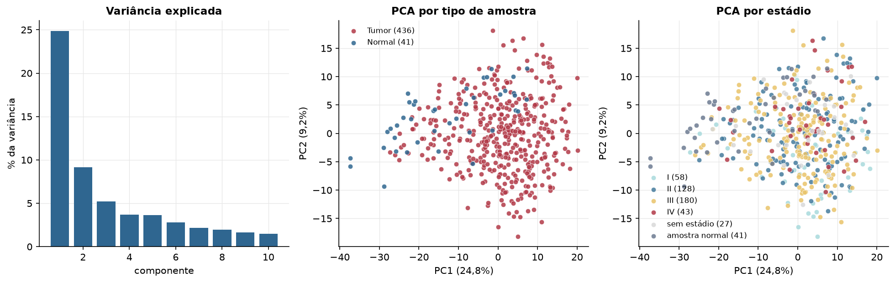
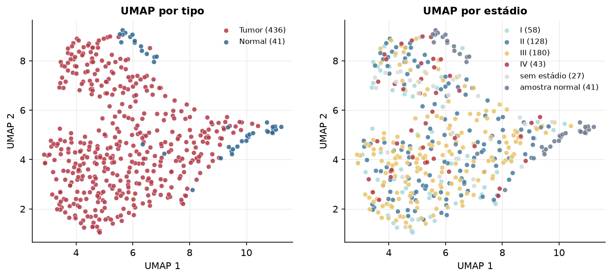
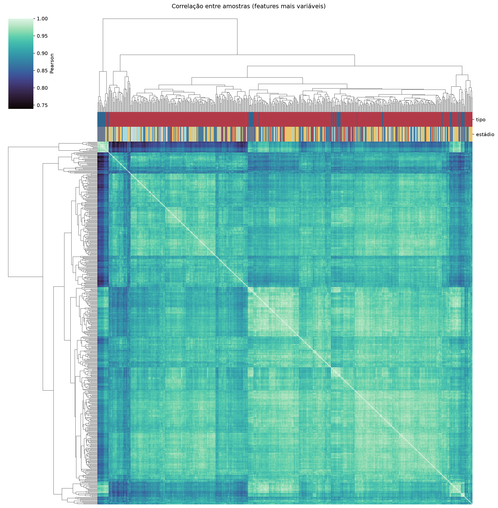
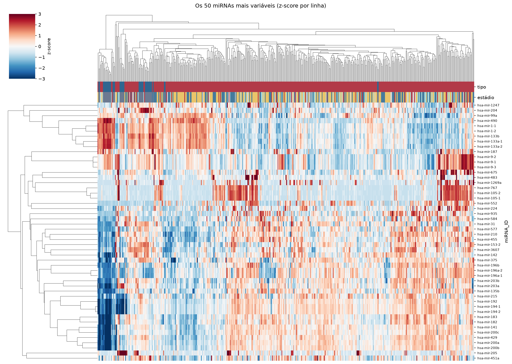
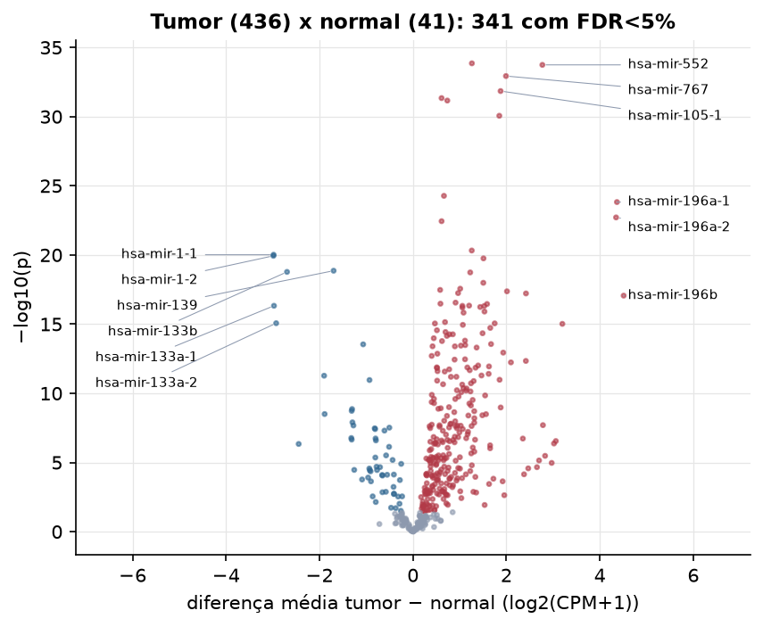

STAD · miRNA-seq: contagens brutas (GDC)
BCGSC miRNA Profiling (miRBase v21) · gerado em 22/10/2026 04:35
3,5 Mtamanho mediano
0,84dispersão mediana α
437miRNAs
436amostras tumorais
41amostras normais
0,0%valores faltantes
Fonte: API do GDC (BCGSC miRNA Profiling)
Principais resultados
- Bibliotecas de 0,5 a 17,4 milhões de leituras (mediana 3,5). 985 de 1.881 features têm leitura em pelo menos 10% das amostras.
- A variância cresce bem acima da média: a dispersão mediana da binomial negativa é α=0.84 (para features com média > 10). Isso descarta um modelo Poisson e indica binomial negativa (ou Poisson-lognormal) na verossimilhança.
- A fração de zeros é compatível com a binomial negativa (diferença mediana -3,6%); inflação de zeros não parece necessária.
- Em média 83,3% das leituras de cada amostra vão para as 20 features mais abundantes.
- 437 miRNAs medidos em 477 amostras (436 tumorais e 41 normais); 0,0% dos valores estão faltando.
- Os dois primeiros componentes principais explicam 24,8% e 9,2% da variância das features mais variáveis.
- Correlação mediana entre amostras: 0,94.
- Amostras com correlação muito abaixo das demais (possíveis outliers técnicos): TCGA-FP-7829-11, TCGA-FP-7735-11, TCGA-HU-A4G3-11, TCGA-HU-A4GY-11, TCGA-HU-A4GX-11, TCGA-HU-A4G9-11, TCGA-HU-A4GC-11, TCGA-HU-A4GP-11.
- Tumor x normal: 341 miRNAs diferentes com FDR < 5% (285 maiores no tumor, 56 maiores no normal; 41 pacientes têm o par tumor-normal).
- Mais aumentados no tumor: hsa-mir-937, hsa-mir-552, hsa-mir-767, hsa-mir-105-1, hsa-mir-3662, hsa-mir-4652, hsa-mir-105-2, hsa-mir-4664.
- Mais reduzidos no tumor: hsa-mir-1-1, hsa-mir-1-2, hsa-mir-139, hsa-mir-133b, hsa-mir-133a-1, hsa-mir-133a-2, hsa-mir-195, hsa-mir-145.
- Associações clínicas com p < 0,05 nos componentes principais: PC2 com estádio (p=0.00023); PC1 com idade (p=0.029); PC3 com idade (p=0.011); PC2 com sobrevida (p=0.0026).
Biblioteca


Sobredispersão e zeros

Exploração em log2(CPM+1)
Features com CPM ≥ 1 em pelo menos 20% das amostras (437 features).
Distribuição dos valores


Estrutura das amostras




Tumor x normal

Features mais diferentes entre tumor e normal
| miRNA_ID | diferenca_tumor_menos_normal | t | p | fdr |
|---|---|---|---|---|
| hsa-mir-937 | 1.261 | 15.906 | 1.41e-34 | 3.98e-32 |
| hsa-mir-552 | 2.77 | 15.014 | 1.82e-34 | 3.98e-32 |
| hsa-mir-767 | 1.991 | 13.092 | 1.17e-33 | 1.7e-31 |
| hsa-mir-105-1 | 1.876 | 12.833 | 1.42e-32 | 1.56e-30 |
| hsa-mir-3662 | 0.613 | 13.613 | 4.59e-32 | 4.01e-30 |
| hsa-mir-4652 | 0.735 | 12.701 | 6.92e-32 | 5.04e-30 |
| hsa-mir-105-2 | 1.848 | 12.414 | 8.71e-31 | 5.44e-29 |
| hsa-mir-4664 | 0.664 | 12.798 | 5.33e-25 | 2.91e-23 |
| hsa-mir-196a-1 | 4.366 | 17.42 | 1.5e-24 | 7.29e-23 |
| hsa-mir-196a-2 | 4.348 | 16.685 | 1.94e-23 | 8.47e-22 |
| hsa-mir-509-1 | 0.613 | 11.106 | 3.62e-23 | 1.44e-21 |
| hsa-mir-615 | 1.259 | 11.974 | 4.77e-21 | 1.74e-19 |
| hsa-mir-1-1 | -2.982 | -14.114 | 9.64e-21 | 3.24e-19 |
| hsa-mir-1-2 | -2.986 | -14.153 | 1.15e-20 | 3.6e-19 |
| hsa-mir-935 | 1.51 | 11.778 | 1.77e-20 | 5.15e-19 |
| hsa-mir-139 | -1.698 | -14.071 | 1.38e-19 | 3.76e-18 |
| hsa-mir-133b | -2.695 | -13.86 | 1.68e-19 | 4.31e-18 |
| hsa-mir-877 | 1.226 | 12.384 | 1.83e-19 | 4.44e-18 |
| hsa-mir-181b-2 | 1.506 | 13.05 | 1.03e-18 | 2.36e-17 |
| hsa-mir-421 | 1.012 | 11.835 | 2.74e-18 | 6e-17 |
| hsa-mir-7974 | 0.582 | 10.321 | 3.36e-18 | 6.99e-17 |
| hsa-mir-335 | 2.013 | 12.677 | 4.24e-18 | 8.42e-17 |
| hsa-mir-151a | 0.966 | 12.277 | 5.71e-18 | 1.08e-16 |
| hsa-mir-21 | 2.419 | 14.514 | 6.04e-18 | 1.1e-16 |
| hsa-mir-196b | 4.51 | 12.956 | 8.7e-18 | 1.52e-16 |
| hsa-mir-4746 | 0.912 | 11.034 | 2.79e-17 | 4.68e-16 |
| hsa-mir-509-3 | 0.589 | 9.491 | 3.33e-17 | 5.38e-16 |
| hsa-mir-17 | 1.586 | 12.051 | 3.5e-17 | 5.46e-16 |
| hsa-mir-4661 | 1.202 | 10.863 | 4.59e-17 | 6.66e-16 |
| hsa-mir-133a-1 | -2.974 | -12.291 | 4.71e-17 | 6.66e-16 |
Associação com variáveis clínicas
p-valores da associação dos três primeiros componentes principais (só tumores) com estádio (Kruskal-Wallis), sexo (Mann-Whitney), idade (Spearman) e sobrevida global (Cox univariado).
| estádio (Kruskal) | sexo (Mann-Whitney) | idade (Spearman) | sobrevida OS (Cox) | |
|---|---|---|---|---|
| PC1 (21,8%) | 0.059 | 0.514 | 0.029 | 0.347 |
| PC2 (9,8%) | 0.000226 | 0.236 | 0.203 | 0.003 |
| PC3 (5,1%) | 0.057 | 0.125 | 0.011 | 0.229 |